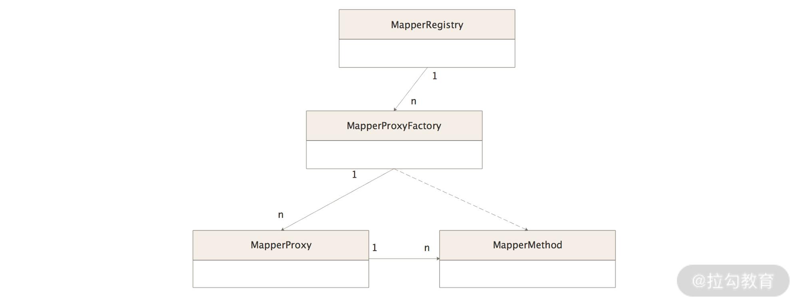
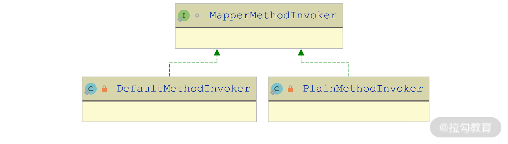
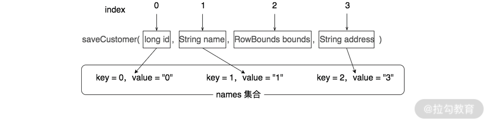

- 00 开篇词 领略 MyBatis 设计思维，突破持久化技术瓶颈.md.html
- 01 常见持久层框架赏析，到底是什么让你选择 MyBatis？.md.html
- 02 订单系统持久层示例分析，20 分钟带你快速上手 MyBatis.md.html
- 03 MyBatis 源码环境搭建及整体架构解析.md.html
- 04 MyBatis 反射工具箱：带你领略不一样的反射设计思路.md.html
- 05 数据库类型体系与 Java 类型体系之间的“爱恨情仇”.md.html
- 06 日志框架千千万，MyBatis 都能兼容的秘密是什么？.md.html
- 07 深入数据源和事务，把握持久化框架的两个关键命脉.md.html
- 08 Mapper 文件与 Java 接口的优雅映射之道.md.html
- 09 基于 MyBatis 缓存分析装饰器模式的最佳实践.md.html
- 10 鸟瞰 MyBatis 初始化，把握 MyBatis 启动流程脉络（上）.md.html
- 11 鸟瞰 MyBatis 初始化，把握 MyBatis 启动流程脉络（下）.md.html
- 12 深入分析动态 SQL 语句解析全流程（上）.md.html
- 13 深入分析动态 SQL 语句解析全流程（下）.md.html
- 14 探究 MyBatis 结果集映射机制背后的秘密（上）.md.html
- 15 探究 MyBatis 结果集映射机制背后的秘密（下）.md.html
- 16 StatementHandler：参数绑定、SQL 执行和结果映射的奠基者.md.html
- 17 Executor 才是执行 SQL 语句的幕后推手（上）.md.html
- 18 Executor 才是执行 SQL 语句的幕后推手（下）.md.html
- 19 深入 MyBatis 内核与业务逻辑的桥梁——接口层.md.html
- 20 插件体系让 MyBatis 世界更加精彩.md.html
- 21 深挖 MyBatis 与 Spring 集成底层原理.md.html
- 22 基于 MyBatis 的衍生框架一览.md.html
- 23 结束语 会使用只能默默“搬砖”，懂原理才能快速晋升.md.html
08 Mapper 文件与 Java 接口的优雅映射之道
在<使用 MyBatis 实现订单系统示例的时候>，我们会为每个 Mapper.xml 配置文件创建一个对应的 Mapper 接口，例如，订单系统示例中的 CustomerMapper.xml 配置文件与 CustomerMapper 接口，定义完 CustomerMapper 接口之后，我们无须提供 CustomerMapper 接口实现，就可以直接调用 CustomerMapper 对象的方法执行 CustomerMapper.xml 配置文件中的 SQL 语句。
这里你可能会有几个疑惑：
- 为什么需要 CustomerMapper 接口来执行对应的 SQL 语句呢？
- 为什么无须提供 CustomerMapper 接口的实现类呢？
- 实际使用的 CustomerMapper 对象是什么呢？CustomerMapper 对象是怎么创建的呢？底层原理是什么呢？
学习完这一讲，你就会找到这些问题的答案。
MyBatis 的前身是 iBatis，我们在使用 iBatis 的时候，如果想查询一个 Customer 对象的话，可以调用 SqlSession.queryForObject ("find", customerId) 方法，queryForObject() 方法的这两个参数分别是要执行的 SQL 语句唯一标识（示例中就是定义在 CustomerMapper.xml 中的 id 为 find 的 SQL 语句），以及 SQL 语句执行时需要的实参（示例中就是顾客 ID）。
这里 SQL 语句的唯一标识是一个字符串，如果我们在写代码的时候，不小心写错了这个唯一标识，例如将“find”写成了“finb”，在代码编译以及 iBatis 初始化的过程中，根本发现不了这个问题，而是在真正执行到这行代码的时候才会抛出异常，这样其实对流量是有损的。
MyBatis 中的 Mapper 接口就可以很好地解决这个问题。
示例中的 CustomerMapper 接口中定义了 SQL 语句唯一标识同名的 find() 方法，我们在写代码的时候使用的是 CustomerMapper.find() 方法，如果拼写成 CustomerMapper.finb()，编译会失败。这是因为 MyBatis 初始化的时候会尝试将 CustomerMapper 接口中的 find() 方法名与 CustomerMapper.xml 配置文件中的 SQL 唯一标识进行映射，如果 SQL 语句唯一标识写错成“finb”，MyBatis 会发现这个错误，并在初始化过程中就抛出异常，这样编译器以及 MyBatis 就可以帮助我们更早发现异常，避免线上流量的损失。
在 MyBatis 中，实现 CustomerMapper 接口与 CustomerMapper.xml 配置文件映射功能的是 binding 模块，其中涉及的核心类如下图所示：

binding 模块核心组件关系图
下面我们就开始详细分析 binding 模块中涉及的这些核心组件。
MapperRegistry
MapperRegistry 是 MyBatis 初始化过程中构造的一个对象，主要作用就是统一维护 Mapper 接口以及这些 Mapper 的代理对象工厂。
下面我们先来看 MapperRegistry 中的核心字段。
- config（Configuration 类型）：指向 MyBatis 全局唯一的 Configuration 对象，其中维护了解析之后的全部 MyBatis 配置信息。
- knownMappers（Map<Class
<?>, MapperProxyFactory<?>> 类型）：维护了所有解析到的 Mapper 接口以及 MapperProxyFactory 工厂对象之间的映射关系。
在 MyBatis 初始化时，会读取全部 Mapper.xml 配置文件，还会扫描全部 Mapper 接口中的注解信息，之后会调用 MapperRegistry.addMapper() 方法填充 knownMappers 集合。在 addMapper() 方法填充 knownMappers 集合之前，MapperRegistry 会先保证传入的 type 参数是一个接口且 knownMappers 集合没有加载过 type 类型，然后才会创建相应的 MapperProxyFactory 工厂并记录到 knownMappers 集合中。
在我们使用 CustomerMapper.find() 方法执行数据库查询的时候，MyBatis 会先从MapperRegistry 中获取 CustomerMapper 接口的代理对象，这里就使用到 MapperRegistry.getMapper()方法，它会拿到前面创建的 MapperProxyFactory 工厂对象，并调用其 newInstance() 方法创建 Mapper 接口的代理对象。
MapperProxyFactory
正如分析 MapperRegistry 时介绍的那样，MapperProxyFactory 的核心功能就是创建 Mapper 接口的代理对象，其底层核心原理就是前面《06 | 日志框架千千万，MyBatis 都能兼容的秘密是什么？》介绍的 JDK 动态代理。
在 MapperRegistry 中会依赖 MapperProxyFactory 的 newInstance() 方法创建代理对象，底层则是通过 JDK 动态代理的方式生成代理对象的，如下代码所示，这里使用的 InvocationHandler 实现是 MapperProxy。
protected T newInstance(MapperProxy<T> mapperProxy) {
// 创建实现了mapperInterface接口的动态代理对象，这里使用的InvocationHandler 实现是MapperProxy
return (T) Proxy.newProxyInstance(mapperInterface.getClassLoader(),
new Class[]{mapperInterface}, mapperProxy);
}
MapperProxy
通过分析 MapperProxyFactory 这个工厂类，我们可以清晰地看到MapperProxy 是生成 Mapper 接口代理对象的关键，它实现了 InvocationHandler 接口。
下面我们先来介绍一下 MapperProxy 中的核心字段。
- sqlSession（SqlSession 类型）：记录了当前 MapperProxy 关联的 SqlSession 对象。在与当前 MapperProxy 关联的代理对象中，会用该 SqlSession 访问数据库。
- mapperInterface（Class
<T>类型）：Mapper 接口类型，也是当前 MapperProxy 关联的代理对象实现的接口类型。 - methodCache（Map<Method, MapperMethodInvoker> 类型）：用于缓存 MapperMethodInvoker 对象的集合。methodCache 中的 key 是 Mapper 接口中的方法，value 是该方法对应的 MapperMethodInvoker 对象。
- lookupConstructor（Constructor 类型）：针对 JDK 8 中的特殊处理，该字段指向了 MethodHandles.Lookup 的构造方法。
- privateLookupInMethod（Method 类型）：除了 JDK 8 之外的其他 JDK 版本会使用该字段，该字段指向 MethodHandles.privateLookupIn() 方法。
这里涉及 MethodHandle 的内容，所以下面我们就来简单介绍一下 MethodHandle 的基础知识点。
1. MethodHandle 简介
从 Java 7 开始，除了反射之外，在 java.lang.invoke 包中新增了 MethodHandle 这个类，它的基本功能与反射中的 Method 类似，但它比反射更加灵活。反射是 Java API 层面支持的一种机制，MethodHandle 则是 JVM 层支持的机制，相较而言，反射更加重量级，MethodHandle 则更轻量级，性能也比反射更好些。
使用 MethodHandle 进行方法调用的时候，往往会涉及下面几个核心步骤：
- 创建 MethodType 对象，确定方法的签名，这个签名会涉及方法参数及返回值的类型；
- 在 MethodHandles.Lookup 这个工厂对象中，根据方法名称以及上面创建的 MethodType 查找对应 MethodHandle 对象；
- 将 MethodHandle 绑定到一个具体的实例对象；
- 调用 MethodHandle.invoke()/invokeWithArguments()/invokeExact() 方法，完成方法调用。
下面是 MethodHandle 的一个简单示例：
public class MethodHandleDemo {
// 定义一个sayHello()方法
public String sayHello(String s) {
return "Hello, " + s;
}
public static void main(String[] args) throws Throwable {
// 初始化MethodHandleDemo实例
MethodHandleDemo subMethodHandleDemo = new SubMethodHandleDemo();
// 定义sayHello()方法的签名，第一个参数是方法的返回值类型，第二个参数是方法的参数列表
MethodType methodType = MethodType.methodType(String.class, String.class);
// 根据方法名和MethodType在MethodHandleDemo中查找对应的MethodHandle
MethodHandle methodHandle = MethodHandles.lookup()
.findVirtual(MethodHandleDemo.class, "sayHello", methodType);
// 将MethodHandle绑定到一个对象上，然后通过invokeWithArguments()方法传入实参并执行
System.out.println(methodHandle.bindTo(subMethodHandleDemo)
.invokeWithArguments("MethodHandleDemo"));
// 下面是调用MethodHandleDemo对象(即父类)的方法
MethodHandleDemo methodHandleDemo = new MethodHandleDemo();
System.out.println(methodHandle.bindTo(methodHandleDemo)
.invokeWithArguments("MethodHandleDemo"));
}
public static class SubMethodHandleDemo extends MethodHandleDemo{
// 定义一个sayHello()方法
public String sayHello(String s) {
return "Sub Hello, " + s;
}
}
}
在 MethodHandle 调用方法的时候，也是支持多态的，在通过 bindTo() 方法绑定到某个实例对象的时候，在 bind 过程中会进行类型检查等一系列检查操作。
通过上面这个示例我们可以看出，使用 MethodHandle 实现反射的效果，更像我们平时通过 Java 代码生成的字节码，例如，在字节码中可以看到创建的方法签名（MethodType）、方法的具体调用方式（findStatic()、findSpecial()、findVirtual() 等方法）以及类型的隐式转换。
2. MethodProxy 中的代理逻辑
介绍完 MethodHandle 的基础之后，我们回到 MethodProxy 继续分析。
MapperProxy.invoke() 方法是代理对象执行的入口，其中会拦截所有非 Object 方法，针对每个被拦截的方法，都会调用 cachedInvoker() 方法获取对应的 MapperMethod 对象，并调用其 invoke() 方法执行代理逻辑以及目标方法。
在 cachedInvoker() 方法中，首先会查询 methodCache 缓存，如果查询的方法为 default 方法，则会根据当前使用的 JDK 版本，获取对应的 MethodHandle 并封装成 DefaultMethodInvoker 对象写入缓存；如果查询的方法是非 default 方法，则创建 PlainMethodInvoker 对象写入缓存。
cachedInvoker() 方法的具体实现如下：
private MapperMethodInvoker cachedInvoker(Method method) throws Throwable {
// 尝试从methodCache缓存中查询方法对应的MapperMethodInvoker
MapperMethodInvoker invoker = methodCache.get(method);
if (invoker != null) {
return invoker;
}
// 如果方法在缓存中没有对应的MapperMethodInvoker，则进行创建
return methodCache.computeIfAbsent(method, m -> {
if (m.isDefault()) { // 针对default方法的处理
// 这里根据JDK版本的不同，获取方法对应的MethodHandle的方式也有所不同
// 在JDK 8中使用的是lookupConstructor字段，而在JDK 9中使用的是
// privateLookupInMethod字段。获取到MethodHandle之后，会使用
// DefaultMethodInvoker进行封装
if (privateLookupInMethod == null) {
return new DefaultMethodInvoker(getMethodHandleJava8(method));
} else {
return new DefaultMethodInvoker(getMethodHandleJava9(method));
}
} else {
// 对于其他方法，会创建MapperMethod并使用PlainMethodInvoker封装
return new PlainMethodInvoker(
new MapperMethod(mapperInterface, method, sqlSession.getConfiguration()));
}
});
}
其中使用到的 DefaultMethodInvoker 和 PlainMethodInvoker 都是 MapperMethodInvoker 接口的实现，如下图所示：

MapperMethodInvoker 接口继承关系图
在 DefaultMethodInvoker.invoke() 方法中，会通过底层维护的 MethodHandle 完成方法调用，核心实现如下：
public Object invoke(Object proxy, Method method, Object[] args, SqlSession sqlSession) throws Throwable {
// 首先将MethodHandle绑定到一个实例对象上，然后调用invokeWithArguments()方法执行目标方法
return methodHandle.bindTo(proxy).invokeWithArguments(args);
}
在 PlainMethodInvoker.invoke() 方法中，会通过底层维护的 MapperMethod 完成方法调用，其核心实现如下：
public Object invoke(Object proxy, Method method, Object[] args, SqlSession sqlSession) throws Throwable {
// 直接执行MapperMethod.execute()方法完成方法调用
return mapperMethod.execute(sqlSession, args);
}
MapperMethod
通过对 MapperProxy 的分析我们知道，MapperMethod 是最终执行 SQL 语句的地方，同时也记录了 Mapper 接口中的对应方法，其核心字段也围绕这两方面的内容展开。
1. SqlCommand
MapperMethod 的第一个核心字段是 command（SqlCommand 类型），其中维护了关联 SQL 语句的相关信息。在 MapperMethod$SqlCommand 这个内部类中，通过 name 字段记录了关联 SQL 语句的唯一标识，通过 type 字段（SqlCommandType 类型）维护了 SQL 语句的操作类型，这里 SQL 语句的操作类型分为 INSERT、UPDATE、DELETE、SELECT 和 FLUSH 五种。
下面我们就来看看 SqlCommand 如何查找 Mapper 接口中一个方法对应的 SQL 语句的信息，该逻辑在 SqlCommand 的构造方法中实现，如下：
public SqlCommand(Configuration configuration, Class<?> mapperInterface, Method method) {
// 获取Mapper接口中对应的方法名称
final String methodName = method.getName();
// 获取Mapper接口的类型
final Class<?> declaringClass = method.getDeclaringClass();
// 将Mapper接口名称和方法名称拼接起来作为SQL语句唯一标识，
// 到Configuration这个全局配置对象中查找SQL语句
// MappedStatement对象就是Mapper.xml配置文件中一条SQL语句解析之后得到的对象
MappedStatement ms = resolveMappedStatement(mapperInterface,
methodName, declaringClass, configuration);
if (ms == null) {
// 针对@Flush注解的处理
if (method.getAnnotation(Flush.class) != null) {
name = null;
type = SqlCommandType.FLUSH;
} else { // 没有@Flush注解，会抛出异常
throw new BindingException("...");
}
} else {
// 记录SQL语句唯一标识
name = ms.getId();
// 记录SQL语句的操作类型
type = ms.getSqlCommandType();
}
}
这里调用的 resolveMappedStatement() 方法不仅会尝试根据 SQL 语句的唯一标识从 Configuration 全局配置对象中查找关联的 MappedStatement 对象，还会尝试顺着 Mapper 接口的继承树进行查找，直至查找成功为止。具体实现如下：
private MappedStatement resolveMappedStatement(Class<?> mapperInterface, String methodName,
Class<?> declaringClass, Configuration configuration) {
// 将Mapper接口名称和方法名称拼接起来作为SQL语句唯一标识
String statementId = mapperInterface.getName() + "." + methodName;
// 检测Configuration中是否包含相应的MappedStatement对象
if (configuration.hasStatement(statementId)) {
return configuration.getMappedStatement(statementId);
} else if (mapperInterface.equals(declaringClass)) {
// 如果方法就定义在当前接口中，则证明没有对应的SQL语句，返回null
return null;
}
// 如果当前检查的Mapper接口(mapperInterface)中不是定义该方法的接口(declaringClass)，
// 则会从mapperInterface开始，沿着继承关系向上查找递归每个接口，
// 查找该方法对应的MappedStatement对象
for (Class<?> superInterface : mapperInterface.getInterfaces()) {
if (declaringClass.isAssignableFrom(superInterface)) {
MappedStatement ms = resolveMappedStatement(superInterface, methodName,
declaringClass, configuration);
if (ms != null) {
return ms;
}
}
}
return null;
}
}
2. MethodSignature
MapperMethod 的第二个核心字段是 method 字段（MethodSignature 类型），其中维护了 Mapper 接口中方法的相关信息。
首先是 Mapper 接口方法返回值的相关信息，涉及下面七个字段。
- returnsMany、returnsMap、returnsVoid、returnsCursor、returnsOptional（boolean 类型）：用于表示方法返回值是否为 Collection 集合或数组、Map 集合、void、Cursor、Optional 类型。
- returnType（Class<?> 类型）：方法返回值的具体类型。
- mapKey（String 类型）：如果方法的返回值为 Map 集合，则通过 mapKey 字段记录了作为 key 的列名。mapKey 字段的值是通过解析方法上的 @MapKey 注解得到的。
接下来是与 Mapper 接口方法的参数列表相关的三个字段。
- resultHandlerIndex（Integer 类型）：记录了 Mapper 接口方法的参数列表中 ResultHandler 类型参数的位置。
- rowBoundsIndex（Integer 类型）：记录了 Mapper 接口方法的参数列表中 RowBounds 类型参数的位置。
- paramNameResolver（ParamNameResolver 类型）：用来解析方法参数列表的工具类。
在上述字段中，需要着重讲解的是 ParamNameResolver 这个解析方法参数列表的工具类。
在 ParamNameResolver 中有一个 names 字段（SortedMap<Integer, String>类型）记录了各个参数在参数列表中的位置以及参数名称，其中 key 是参数在参数列表中的位置索引，value 为参数的名称。我们可以通过 @Param 注解指定一个参数名称，如果没有特别指定，则默认使用参数列表中的变量名称作为其名称，这与 ParamNameResolver 的 useActualParamName 字段相关。useActualParamName 是一个全局配置。
如果我们将 useActualParamName 配置为 false，ParamNameResolver 会使用参数的下标索引作为其名称。另外，names 集合会跳过 RowBounds 类型以及 ResultHandler 类型的参数，如果使用下标索引作为参数名称，在 names 集合中就会出现 KV 不一致的场景。例如下图就很好地说明了这种不一致的场景，其中 saveCustomer(long id, String name, RowBounds bounds, String address) 方法对应的 names 集合为 {{0, "0"}, {1, "1"}, {2, "3"}}。

names 集合中 KV 不一致示意图
从图中可以看到，由于 RowBounds 参数的存在，第四个参数在 names 集合中的 KV 出现了不一致（即 key = 2 与 value = "3" 不一致）。
完成 names 集合的初始化之后，我们再来看如何从 names 集合中查询参数名称，该部分逻辑在 ParamNameResolver.getNamedParams() 方法，其中会将 Mapper 接口方法的实参与 names 集合中记录的参数名称相关联，其核心逻辑如下：
public Object getNamedParams(Object[] args) {
// 获取方法中非特殊类型(RowBounds类型和ResultHandler类型)的参数个数
final int paramCount = names.size();
if (args == null || paramCount == 0) {
return null; // 方法没有非特殊类型参数，返回null即可
} else if (!hasParamAnnotation && paramCount == 1) {
// 方法参数列表中没有使用@Param注解，且只有一个非特殊类型参数
Object value = args[names.firstKey()];
return wrapToMapIfCollection(value, useActualParamName ? names.get(0) : null);
} else {
// 处理存在@Param注解或是存在多个非特殊类型参数的场景
// param集合用于记录了参数名称与实参之间的映射关系
// 这里的ParamMap继承了HashMap，与HashMap的唯一不同是：
// 向ParamMap中添加已经存在的key时，会直接抛出异常，而不是覆盖原有的Key
final Map<String, Object> param = new ParamMap<>();
int i = 0;
for (Map.Entry<Integer, String> entry : names.entrySet()) {
// 将参数名称与实参的映射保存到param集合中
param.put(entry.getValue(), args[entry.getKey()]);
// 同时，为参数创建"param+索引"格式的默认参数名称，具体格式为：param1, param2等，
// 将"param+索引"的默认参数名称与实参的映射关系也保存到param集合中
final String genericParamName = GENERIC_NAME_PREFIX + (i + 1);
if (!names.containsValue(genericParamName)) {
param.put(genericParamName, args[entry.getKey()]);
}
i++;
}
return param;
}
}
了解了 ParamNameResolver 的核心功能之后，我们回到 MethodSignature 继续分析，在其构造函数中会解析方法中的返回值、参数列表等信息，并初始化前面介绍的核心字段，这里也会使用到前面介绍的 ParamNameResolver 工具类。下面是 MethodSignature 构造方法的核心实现：
public MethodSignature(Configuration configuration, Class<?> mapperInterface, Method method) {
... // 通过TypeParameterResolver工具类解析方法的返回值类型，初始化returnType字段值，省略该解析部分代码
// 根据返回值类型，初始化returnsVoid、returnsMany、returnsCursor、
// returnsMap、returnsOptional这五个与方法返回值类型相关的字段
this.returnsVoid = void.class.equals(this.returnType);
...
// 如果返回值为Map类型，则从方法的@MapKey注解中获取Map中为key的字段名称
this.mapKey = getMapKey(method);
this.returnsMap = this.mapKey != null;
// 解析方法中RowBounds类型参数以及ResultHandler类型参数的下标索引位置，
// 初始化rowBoundsIndex和resultHandlerIndex字段
this.rowBoundsIndex = getUniqueParamIndex(method, RowBounds.class);
this.resultHandlerIndex = getUniqueParamIndex(method, ResultHandler.class);
// 创建ParamNameResolver工具对象，在创建ParamNameResolver对象的时候，
// 会解析方法的参数列表信息
this.paramNameResolver = new ParamNameResolver(configuration, method);
}
在初始化过程中，我们看到会调用 getUniqueParamIndex() 方法查找目标类型参数的下标索引位置，其核心原理就是遍历方法的参数列表，逐个匹配参数的类型是否为目标类型，如果匹配成功，则会返回当前参数的下标索引。getUniqueParamIndex() 方法的具体实现比较简单，这里就不再展示，你若感兴趣的话可以参考源码进行学习。
3. 深入 execute() 方法
分析完 MapperMethod 中的几个核心内部类，我们回到 MapperMethod 继续介绍。
execute() 方法是 MapperMethod 中最核心的方法之一。execute() 方法会根据要执行的 SQL 语句的具体类型执行 SqlSession 的相应方法完成数据库操作，其核心实现如下：
public Object execute(SqlSession sqlSession, Object[] args) {
Object result;
switch (command.getType()) { // 判断SQL语句的类型
case INSERT: {
// 通过ParamNameResolver.getNamedParams()方法将方法的实参与
// 参数的名称关联起来
Object param = method.convertArgsToSqlCommandParam(args);
// 通过SqlSession.insert()方法执行INSERT语句，
// 在rowCountResult()方法中，会根据方法的返回值类型对结果进行转换
result = rowCountResult(sqlSession.insert(command.getName(), param));
break;
}
case UPDATE: {
Object param = method.convertArgsToSqlCommandParam(args);
// 通过SqlSession.update()方法执行UPDATE语句
result = rowCountResult(sqlSession.update(command.getName(), param));
break;
}
// DELETE分支与UPDATE类似，省略
case SELECT:
if (method.returnsVoid() && method.hasResultHandler()) {
// 如果方法返回值为void，且参数中包含了ResultHandler类型的实参，
// 则查询的结果集将会由ResultHandler对象进行处理
executeWithResultHandler(sqlSession, args);
result = null;
} else if (method.returnsMany()) {
// executeForMany()方法处理返回值为集合或数组的场景
result = executeForMany(sqlSession, args);
} else ...// 省略针对Map、Cursor以及Optional返回值的处理
}
break;
// 省略FLUSH和default分支
}
return result;
}
在 execute() 方法中，对于 INSERT、UPDATE、DELETE 三类 SQL 语句的返回结果，都会通过 rowCountResult() 方法处理。我们知道，上述三种类型的 SQL 语句的执行结果是一个数字，多数场景中代表了 SQL 语句影响的数据行数（注意，这个返回值的具体含义根据 MySQL 的配置有所变化），rowCountResult() 方法会将这个 int 值转换成 Mapper 接口方法的返回值，具体规则如下：
- Mapper 方法返回值为 void，则忽略 SQL 语句的 int 返回值，直接返回 null；
- Mapper 方法返回值为 int 或 Integer 类型，则将 SQL 语句返回的 int 值直接返回；
- Mapper 方法返回值为 long 或 Long 类型，则将 SQL 语句返回的 int 值转换成 long 类型之后返回；
- Mapper 方法返回值为 boolean 或 Boolean 类型，则将 SQL 语句返回的 int 值与 0 比较大小，并将比较结果返回。
接下来看 execute() 方法针对 SELECT 语句查询到的结果集的处理。
- 如果在方法参数列表中有 ResultHandler 类型的参数存在，则会使用 executeWithResultHandler() 方法完成查询，底层依赖的是 SqlSession.select() 方法，结果集将会交由传入的 ResultHandler 对象进行处理。
- 如果方法返回值为集合类型或是数组类型，则会调用 executeForMany() 方法，底层依赖 SqlSession.selectList() 方法进行查询，并将得到的 List 转换成目标集合类型。
- 如果方法返回值为 Map 类型，则会调用 executeForMap() 方法，底层依赖 SqlSession.selectMap() 方法完成查询，并将结果集映射成 Map 集合。
- 针对 Cursor 以及 Optional返回值的处理，也是依赖的 SqlSession 的相关方法完成查询的，这里不再展开。
总结
在这一讲，我们重点介绍了 MyBatis 中的 binding 模块，正是该模块实现了 Mapper 接口与 Mapper.xml 配置文件的映射功能。
- 首先，介绍了 MapperRegistry 这个注册中心，其中维护了 Mapper 接口与代理工厂对象之间的映射关系。
- 然后，分析了 MapperProxy 和 MapperProxyFactory，其中 MapperProxyFactory 使用 JDK 动态代理方式为相应的 Mapper 接口创建了代理对象，MapperProxy 则封装了核心的代理逻辑，将拦截到的目标方法委托给对应的 MapperMethod 处理。
- 最后，详细讲解了 MapperMethod，分析了它是如何根据方法签名执行相应的 SQL 语句。
到这里，你应该就能回答开篇的那几个疑惑了吧？我这里也总结一下。
- 使用 CustomerMapper 接口来执行 SQL 语句，是因为可以在编译期提前暴露错误。
- 之所以不用为 CustomerMapper 接口提供具体实现，是因为调用的是 CustomerMapper 的代理对象。
- CustomerMapper 对象是通过 JDK 动态代理生成的，在调用这些代理对象的方法时，就会按照我们今天这一讲整体讲解的逻辑和顺序（所以这一讲你要系统地去学习，各个知识点和步骤是串联在一起的），找到相应的 CustomerMapper.xml 中定义的 SQL 语句并执行这些 SQL 语句，完成数据库操作。